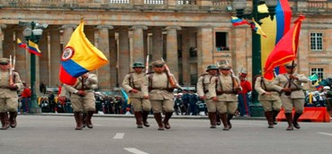

Antecedentes
Colombia estaba bajo el dominio del Imperio español...
Por qué se celebra
El 20 de julio de 1810 marca el inicio simbólico del proceso de independencia...
Hechos destacados
El incidente del florero fue un detonante importante...
Personajes destacados
Antonio Nariño, Camilo Torres Tenorio, y José María Carbonell...

Mujeres destacadas
Policarpa Salavarrieta y Manuela Beltrán tuvieron roles cruciales...